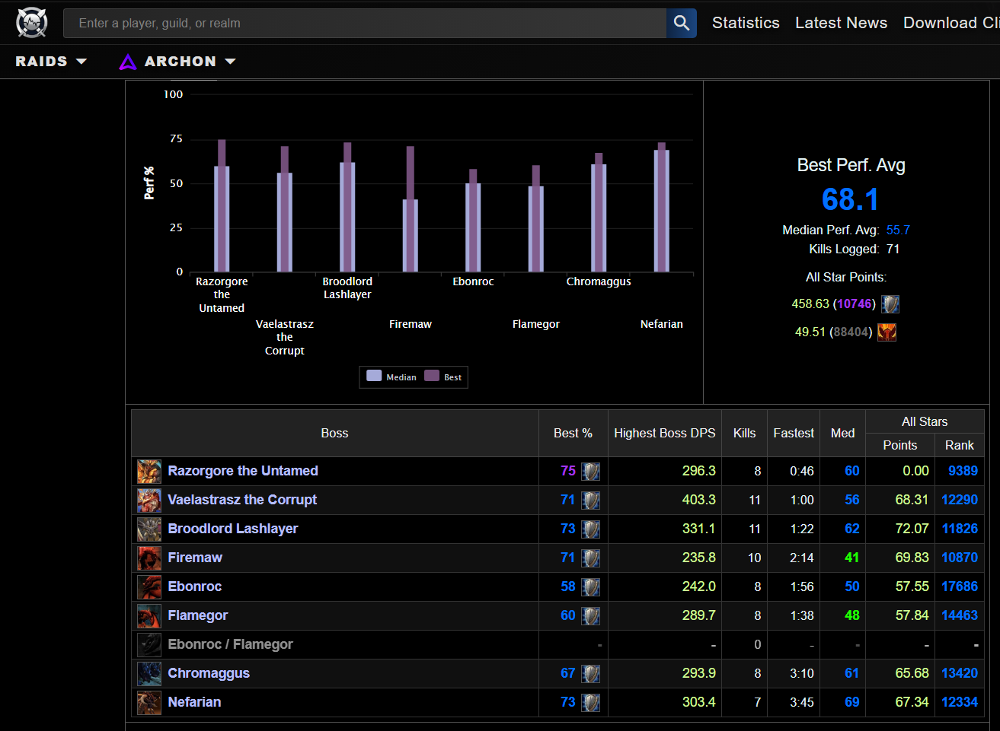

My name is Javier, I have had a passion for World of Warcraft for a long while. I am not too creative, so when it came time to make a blog about something, I picked a topic that I have relative knowledge in. That way it would make my life easier when tasked with making a blog about a topic. Learning the tools and what it takes to use Github, VS code, and learning the semantics of HTML5.
This is my third year at MSU, but i have only recently switched to the Games and Interactive Media degree. At the moment i am seriously unsure about what it is I want to do beyond college. It makes it hard to want to do anything when I dont have a sense of direction. I dont have any appealing photos of myself. So what i'll provide for you are my amateur parses as a tank for one of World of Warcrafts Raids: Black Wing Lair
